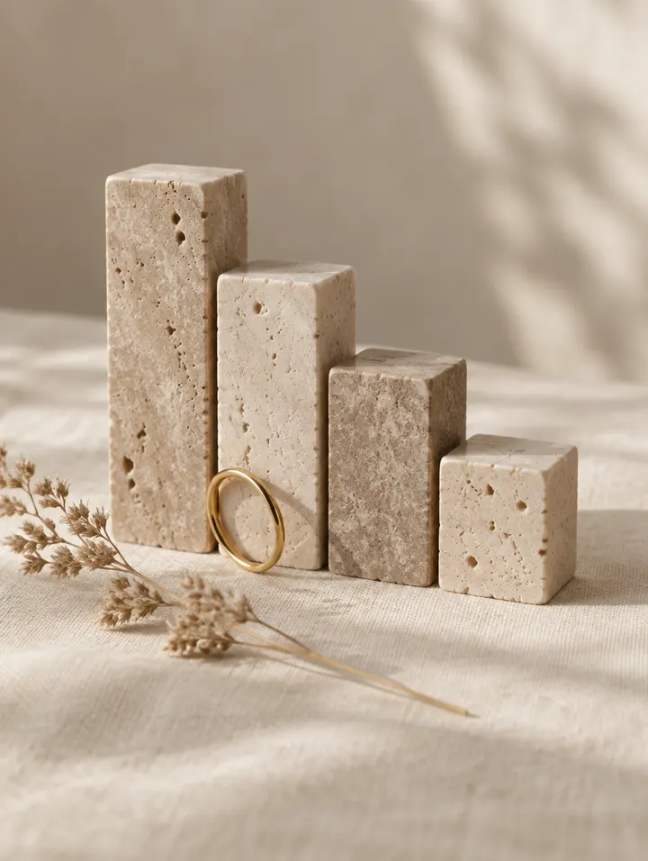

Voghera
Vicolo Rile, 527058 Voghera (PV)
- Martedì – Venerdì9:00 – 19:00
- Sabato9:00 – 14:00
- Domenica e lunedìChiuso
Forse il problema non era fare di più. Forse era capire di più.
NER è il metodo creato da Jalila dopo quindici anni di lavoro in istituto. Non parte da «quale trattamento devo fare?» ma da «di cosa ha davvero bisogno questa persona?».


Come lavoriamo
Prima di proporti qualcosa vogliamo sapere cosa hai già provato e cosa desideri ottenere.
La tecnologia arriva dopo: quella adatta a te, con la spiegazione di cosa puoi aspettarti.
Trattamenti, movimento, alimentazione e integrazione messi in relazione, per dare un senso a ogni passo.
Il nome
I quattro pilastri del Bellessere
Significa scegliere con criterio, spiegarti cosa puoi aspettarti e dare un senso a ogni passo. Con la neuro-estetica rigenerativa al centro.
Scegliere con criterio. Ogni tecnologia e ogni protocollo hanno un perché, e te lo spieghiamo.
Stimolare il corpo a rispondere, prima di pensare a correggere.
Resta al centro del nostro lavoro. Ma non è un corpo perfetto: è un corpo che sa stare bene con chi lo abita.
Trattamenti, movimento, alimentazione e integrazione considerati insieme, mai uno per volta.
Cosa lavora insieme
NER nasce per mettere in relazione quattro elementi, rispettando le esigenze della persona e le competenze di ogni professionista.
È un approccio conservativo, per chi vuole rimandare il più possibile medicina estetica e chirurgia. La scelta, però, resta sempre tua.
Domande frequenti
È il metodo di Jalila Il Bellessere. Mette in relazione trattamenti estetici, movimento, alimentazione e integrazione quando appropriata: quattro pilastri considerati insieme, rispettando le esigenze della persona e le competenze di ogni professionista.
Cambia la domanda di partenza. Non «quale trattamento devo fare?» ma «di cosa ha davvero bisogno questa persona?». Per questo la scelta della tecnologia arriva dopo l’ascolto, non prima.
No. È un approccio conservativo, pensato per chi vuole rimandare il più possibile medicina estetica e chirurgia. Non è un trattamento medico e non sostituisce il parere del medico. La scelta, in ogni caso, resta sempre tua.
Quando un trattamento non dà i risultati che speravi, la risposta non è sempre comprarne un altro. Può essere poco adatto al tuo obiettivo, può mancare continuità, oppure gli stai chiedendo qualcosa che da solo non può dare. La consulenza NER serve a capirlo.
Con una consulenza NER in uno dei due istituti, a Voghera o a Stradella. Chiamaci: partiamo dalla tua storia.
Due istituti in Oltrepò
Chiama l’istituto più comodo e chiedi una consulenza NER. Prima di proporti qualcosa vogliamo sapere cosa hai provato e cosa desideri ottenere.
Preferisci scrivere? Mandaci un messaggio in direct su Instagram @jalila.ilbellessere.
Cellulare 349 112 4782
Indicazioni su Google MapsVoghera328 236 9899WhatsApp
Stradella0385 782980WhatsApp